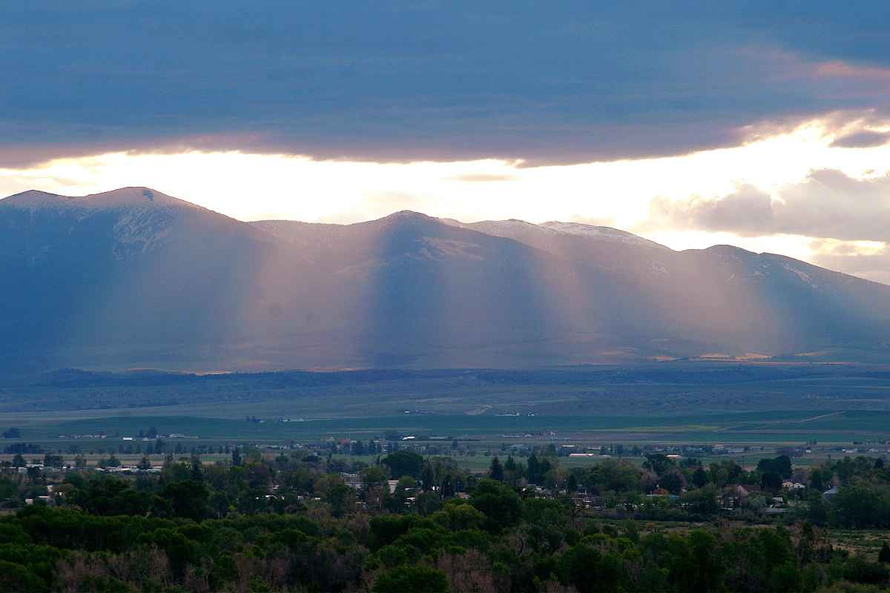

Townsend Personal Care is an assisted living facility with
over twenty eight years of experience.
We offer Low Cost, High Quality
living for people over the age of 18. This includes 24 Hour
Care from a loving staff, Home Cooked Nutritional Meals, and most of
all someone near at all times.
Assisting with everything from Medical to the most basic
needs. Our staff is fully qualified to care for patients
who fall under
Category A and B License. This
includes Dementia, Alzheimer and Parkinson.
****
Since We are Not a
Nursing Home, our Facility uses varies instatutes mainly in our
local area to tend to our patient's Medical Needs.
-Rocky
Mountain Hospice offers many services for our patients
-Doc Campbell's Family Medical Clinic offers local medical
care
-Frontier Home health
and others.
Which brings us to rates.
Our rates are considerably lower than
Nursing Home Costs. Starting as low as
$75.00 for a shared room
$85.00 for a private room per day.
Townsend Personal Care accepts Medicade Waiver.
Please Feel Free to Call or E-mail us for any further information you may need.
Phone:(406)266-3711 Cell:(406)439-5067
email:MARCUZZI
@MT.NET

Our Single and Private
rooms are Fully Customizable to suit your needs and liking.
Townsend
Personal Care is located just out side of Townsend. It has a Great
view of the surrounding mountains as well Canyon Ferry Lake.
The
property around the facility is a large well groomed yard with a
chain linked fenced that encloses it, which
wraps completely around the building. There is a patio with chairs,
tables and a sidewalk which also trails around the
building.
There is plenty of running room for your pets too.
Area Groups and organizations come for visits and to
entertain.
These include 4-H groups
singing groups from various organizations
Senior Companions
Church Groups and much more.
***
We are equipped with fourteen
passenger bus. This allows us to visit restaurants, parks, etc. We
have plenty of room in the facility for Birth-Day and other
celebrations. We also celebrate holidays with decorations and gifts
for our residents. On many occasions residents are able to help with
holiday designs and Ideas. We like to include our residents whenever
possible with social gatherings and celebrations as they become a
part of our family.